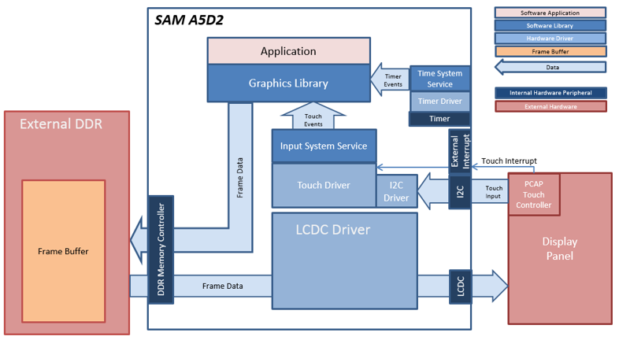
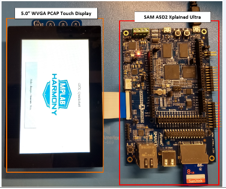

Defining the Architecture

In this configuration, the Aria Graphics library renders the frame to a 32-bit frame buffer in external DDR. The LCDC display controller on the A5D2 is used to drive frame data from DDR to the display. 16-bit RGB565 frame buffer is stored in the internal SRAM.
User touch input on the display panel is received thru the PCAP capacitive touch controller, which sends a notification to the Touch Input Driver. The Touch Input Driver reads the touch information over I2C and sends the touch events to the Aria Graphics Library Task thru the Input System Service Task.
This aria_quickstart configuration runs the Aria Graphics Library in a FreeRTOS environment. The Aria Graphics Library runs as stand-alone task, fully-blocking and waiting for events from external tasks like system service task or the application task. Thread-safe APIs for sending events to the Aria task are provided by the Aria RTOS extension library.
Demonstration Features
• Aria RTOS extensions, FreeRTOS
• LCDC peripheral and driver, external DDR frame buffer
• Touch input driver, Input System Service
• 32-bit RGBA8888 color depth support
• Button, Label and Image widgets
• WVGA 800x480 display resolution
Creating the Project Graph

The Project Graph diagram shows the Harmony components that are included in this application. Lines between components are drawn to satisfy components that depend on a capability that another component provides.
Adding the “SAM A5D2 XPlained Ultra BSP” and “Aria Graphics w/ PDA TM5000 Display” Graphics Template component into the project graph will automatically add the components needed for a graphics project and resolve their dependencies. It will also configure the pins needed to drive the external peripherals like the display and the touch controller.
Building the Application
The parent directory for this application is gfx/apps/aria_quickstart. To build this application, using MPLAB X open the gfx/apps/aria_quickstart/firmware/aria_qs_a5d2_xu_tm5000.X project file.
The following table lists configuration properties:
|
Project Name |
BSP Used |
Graphics Template Used |
Description |
|
aria_qs_a5d2_xu_tm5000_freertos.X |
SAM A5D2 Xplained Ultra |
Aria Graphics w/ PDA TM5000 Display |
Aria GFX on SAM A5D2 Xplained Ultra Board and PDA TM5000 WVGA Display with FreeRTOS |
 Important! Important! |
This application may contain custom code that is marked by the comments // START OF CUSTOM CODE ... and // END OF CUSTOM CODE. When using the MPLAB Harmony Configurator to regenerate the application code, use the "ALL" merging strategy and do not remove or replace the custom code. |
Configuring the Hardware
The final setup should be:

Running the Demonstration
When power-on is successful, the demonstration will display a similar menu to that shown in the following figure (different configurations may have slight variation in the screen aspect ratio):

When Make changes. Generate. Run. is touched, the button will toggle with each individual touch.

|
MPLAB® Harmony Graphics Suite
|